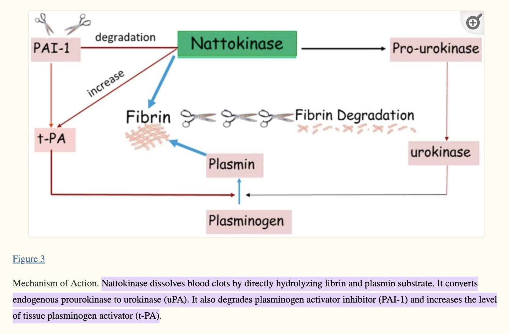
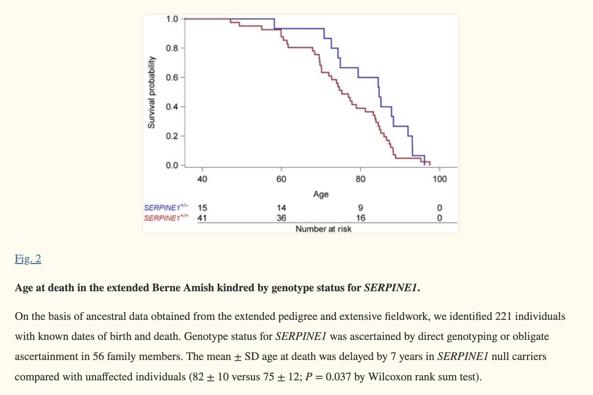

Nattokinase is an enzyme found in natto, a traditional Japanese food made by fermenting soybeans with the bacterium Bacillus subtilis. In the lab it breaks down fibrin, the protein mesh that holds a blood clot together, and the group's posts describe it as a possible way to support the body's own clot-clearing system.1 Supplement doses are measured in fibrinolytic units (FU), which is the unit used throughout the group's discussion.
What the evidence shows is encouraging but thin. One large clinical study of 1,062 participants found improvements in carotid artery thickness and plaque at a high dose (10,800 FU/day) and no benefit at a low dose (3,600 FU/day).2 However, that study measured imaging and cholesterol markers, not heart attacks or deaths, and Louis Nervegna notes that the human studies of nattokinase are small and of lower quality.1 A widely shared commentary quoted in the group puts it plainly: promising, deserves further research, but no one should stop a statin because of it.3
This article walks through what nattokinase is, the proposed mechanisms, the one major study, the anecdotal case the group often cites, the safety caution about bleeding, and practical points to discuss with a doctor. Lumbrokinase and serrapeptase, two other enzyme supplements sometimes grouped with nattokinase, are not discussed in the group's posts in any detail, so this article makes no claims about them.
What nattokinase and natto are
Natto is not commonly eaten in Western diets, but Louis describes it as one of the most physiologically interesting cardiovascular foods because it contains nattokinase, a serine protease (a protein-cutting enzyme) with fibrinolytic activity.1 The enzyme was first characterized as something that directly degrades fibrin, the backbone of a clot (Sumi et al., Experientia, 1987).1
Fibrinolysis is the body's process of dissolving clots after they have done their job. The reasoning Louis shares is that artery disease is not only about cholesterol accumulating: arteries respond to injury, inflammation, oxidation and endothelial dysfunction (trouble in the inner lining of the vessel), and when the vessel surface is disrupted the body forms a clot. The question then becomes whether the body can resolve that clot appropriately, because a clot builds upon itself.1
What is in a serving of natto
Gokhan Can's summary of natto as a "superfood" lists the following for a single 50 g serving: about 5-13 mg of spermidine, 1-2k FU of nattokinase and 200-1,200 mcg of vitamin K2.4 He also notes that natto can be bought in single servings at Japanese food stores or fermented at home from soybeans.4
Two things follow from those numbers. First, natto is a combination food, so any benefit seen in people who eat it cannot be pinned on nattokinase alone. Second, by the same post's figures, reaching the 10,800 FU/day dose used in the clinical study would take roughly five to eleven servings of natto a day (simple arithmetic on the numbers above, not a figure from the post), which is why the group's discussion centers on supplements for higher doses.
How it might work
Fibrin breakdown plus the PAI-1 connection
Beyond cutting fibrin directly, nattokinase appears to support the body's own fibrinolysis by increasing the activity of tissue plasminogen activator (tPA) and reducing plasminogen activator inhibitor-1 (PAI-1). Because PAI-1 inhibits tPA, lowering it should tip the balance toward clot dissolution.1

Gokhan's earlier note focuses on PAI-1 as the central story. It says nattokinase appears to work through PAI-1 inhibition (2017), and the points it lists include:6
- Elevated PAI-1 predicts adverse outcomes in heart attack, stroke, cancer, diabetes and pregnancy complications, and is considered a promising biomarker that links thrombosis, inflammation, metabolic disorders and aging (2010).6
- People who genetically make less PAI-1 live about 7 years longer on average (2017).6
- Metabolic syndrome is associated with overproduction of PAI-1 (2006).6
- In preclinical work, inhibiting PAI-1 helped with fatty liver and dyslipidemia, activated FGF21 5-fold and reduced PCSK9 (2021).6
- Feeding natto bacteria to worms made them live longer (2023).6

Gokhan's own view in that post is that several PAI-1-inhibiting drugs are in the clinical pipeline, but high-dose nattokinase might be the safest option available today.6 That is an admin's opinion built largely on preclinical and genetic observations, not on a human outcome trial, and it should be read that way.
Other compounds in natto
Natto also provides spermidine, a natural polyamine that triggers autophagy (the cell's recycling process). Gokhan's summary says spermidine supplementation extended mouse lifespan by about 10% and that natto intake is associated with an 18% lower all-cause mortality (a figure the post attributes to a BMJ paper on regular, high-dose natto consumption).4 A separate post on spermidine reports that in a prospective population study of 829 people aged 45-84 followed for 20 years, higher dietary spermidine intake was associated with lower all-cause mortality, and the same study linked it to lower cognitive impairment.7 These are observational associations and animal results; they say something about natto as a food, not about a nattokinase pill.
What the human evidence shows
The 1,062-participant clinical study
The study the group cites most is "Effective management of atherosclerosis progress and hyperlipidemia with nattokinase: a clinical study with 1,062 participants," published in Frontiers in Cardiovascular Medicine in 2022.2 Its summary, quoted by Gokhan:2
- Nattokinase at 10,800 FU/day effectively managed the progression of atherosclerosis and hyperlipidemia.
- There was a significant improvement in the lipid profile.
- There was a significant reduction in carotid intima-media thickness (the thickness of the inner layers of the neck artery wall) and in the size of the carotid plaque.
- Improvement rates ranged from 66.5% to 95.4%.
- At 3,600 FU/day nattokinase was ineffective in lowering lipids and in suppressing atherosclerosis progression.
The study's own abstract, as captured in the archive, says that human clinical data on nattokinase were limited before this work.4 Gokhan reads the result as a dose threshold: high-dose nattokinase, above 8k FU/day, may reverse plaque progression.4
Two cautions are worth noting. The study is the only large human dataset in the posts, and it is labelled a clinical study rather than a randomized outcome trial in the group's summaries, so it cannot prove that nattokinase prevents events. And the group's posts describe its findings in slightly different terms: one calls it carotid plaque, another frames it as coronary artery plaque, so readers should rely on the carotid description from the study's own text.24
The nattokinase amounts that come up in the group, side by side:
| Amount | Where it comes from | What the posts report |
|---|---|---|
| 1-2k FU | One 50 g serving of natto4 | Comes packaged with spermidine and vitamin K2, so effects of eating natto cannot be pinned on nattokinase alone |
| 3,600 FU/day | Low-dose arm of the 1,062-participant study2 | Ineffective for lipids and atherosclerosis progression |
| 8k FU | Charles Grashow's personal regimen8 | Taken alongside rosuvastatin, ezetimibe and many other agents; n=1 |
| 10,800 FU/day | High-dose arm of the 1,062-participant study2 | Better lipid profile, thinner carotid wall and smaller carotid plaque |
The gap: no outcome trials
The central caution comes from the KevinMD commentary Louis quotes: nattokinase has shown promising preliminary findings and deserves further investigation, but the evidence is not strong enough to replace proven cholesterol-lowering drugs, and until large independent randomized controlled trials show fewer heart attacks, strokes and deaths, it should be seen as a developing area of research.3 Louis adds that many promising interventions have ultimately failed when tested rigorously and that he would not bet his life on it.3 The article's title, "Nattokinase vs. statins and the limits of plaque data," reflects the underlying issue: plaque and lipid changes are surrogate markers, not proof of fewer events.3
Where nattokinase sits among plaque interventions
Gokhan's ranking of interventions for plaque regression places statins, PCSK9 inhibitors and ezetimibe at the top, with high-dose EPA and pioglitazone fairly well supported.9 Nattokinase appears in a "promising but need further study in rigorous RCTs with sensitive plaque imaging" tier alongside colchicine, aged garlic extract, Centella asiatica, pine bark extract and a plant-based diet.9
For comparison, the group highlights trials in which plaque change was measured with intravascular ultrasound or CT: ezetimibe in PRECISE-IVUS (percent atheroma volume down 1.4%, 78% with regression), ezetimibe added to a statin in the ZEUS trial in diabetic acute coronary syndrome (plaque shrinking 13.9% versus 5.1% with the statin alone), icosapent ethyl 4 g/day in EVAPORATE (vulnerable plaque down 17%) and evolocumab in GLAGOV (PAV down 0.63% per year).10 The post also relays that some research suggests a 1% reduction in plaque volume could equate to a 20% lower event risk.10 Nattokinase has no head-to-head data of this kind in the posts.
Other supplements judged in the same breath
The group often discusses nattokinase beside other plant-based plaque supplements, and the same caveat applies to those: they come from small studies. Aged garlic extract showed slower coronary calcium progression in three small trials, two of which also used co-supplements.11 Centella asiatica and pine bark extract have small trials with encouraging plaque-stability results, many summarized through a supplement-industry magazine.1213 Louis says the Centella findings need larger, higher-quality studies.13
A large review quoted in the group, covering 884 randomized trials of 27 micronutrients, found moderate-to-high quality evidence of benefit for several supplements, such as omega-3 (cardiovascular mortality relative risk 0.93) and coenzyme Q10 (all-cause mortality relative risk 0.68), while vitamins C, D and E and selenium showed no effect and beta-carotene increased mortality.14 The quoted summary does not mention nattokinase. The takeaway for beginners is that supplements as a category range from helpful to harmful, and each needs its own evidence.
An anecdote: Charles Grashow
The group's favorite example of plaque regression with nattokinase is Charles Grashow. Gokhan describes him as the only person he knows who "crushed" his coronary artery calcium (CAC) score through high-dose statin plus ezetimibe plus nattokinase plus other supplements and off-label drugs, along with exercise.15
The details in the longer write-up:8
- A June 2020 heart CT showed minimal coronary calcification. By December 2021 his calcium score had worsened to definite but still mild coronary disease.
- He then started an intensive program that included high-dose nattokinase (8k FU), targeting an LDL of 30 mg/dL and a very low hs-CRP (a blood marker of inflammation) of 0.5.
- A June 2023 CT scan showed his CAC score falling from 102 to 32, a drop of more than two-thirds, with a radiologist classification of CAD-RADS 1 (minimal disease).
- His August 2023 labs listed a calculated LDL of 35 mg/dL and hs-CRP of 0.53. Because he takes high-dose nattokinase, he also had his clotting tests checked: INR 1.1, prothrombin time 11.2 and aPTT 29, all within the listed reference ranges.
- His March 2023 stack for plaque reduction listed 20 mg rosuvastatin and 10 mg ezetimibe along with telmisartan, bergamot, cyclodextrins and many other supplements.
The post itself says the story is anecdotal and an n=1 case.8 The most that can be said is that CAC fell during a period that included very low LDL from powerful drugs plus nattokinase; the post cannot separate the effect of nattokinase from the effect of rosuvastatin, ezetimibe or the rest. Gokhan also uses the story to illustrate that plaque can regress even after it is measurable, and argues that the longer and lower LDL is held down, the better. His estimate is a roughly 60% lifetime risk reduction from a 70-point LDL drop sustained for 30 years, with effects beyond about 80 mg/dL of lowering unknown.15
Safety: bleeding and blood thinners
The group's one explicit safety flag is bleeding. Louis shared Joel Kahn's view that the nattokinase hype is undeserved, that patients are adding it at risk of bleeding, and that people should talk to their doctor; Louis summarizes this as high doses combined with other blood thinners possibly being risky.5
The plausible logic is straightforward: an enzyme that promotes clot breakdown could add to the effect of anticoagulants or antiplatelet drugs. Grashow's clotting tests being normal on high-dose nattokinase is one reassuring data point, but it is a single person.8 The group's admins recommend discussing nattokinase with your doctor, especially if you take any blood thinner.
Nuances and common misconceptions
- "Natto is nattokinase." Natto contains nattokinase, but also spermidine and vitamin K2, and human data on eating natto come from observational associations.4
- "Plaque shrinkage equals fewer heart attacks." Plaque and lipid changes are surrogate markers; outcome trials are missing for nattokinase.3
- "It can replace a statin." The quoted commentary says no one should stop a statin because of nattokinase.3
- "Any dose works." In the 1,062-participant study, 3,600 FU/day did not work and 10,800 FU/day did, so dose appears to matter.2
- "Mechanism proves benefit." The PAI-1 story is biologically interesting, but much of the support is preclinical or genetic.6
What this means for you
- Treat nattokinase as an experimental add-on, not a replacement for proven LDL-lowering treatment.39
- If you are curious about natto as a food, a 50 g serving is a modest source of nattokinase (1-2k FU), spermidine and vitamin K2.4
- The doses linked to plaque benefit in the 1,062-participant study (10,800 FU/day) were far higher than 3,600 FU/day, which showed no effect.2
- If you take anticoagulants or antiplatelet drugs, the group's admins recommend discussing nattokinase with your doctor before starting.5
- Judge your own progress with objective markers such as LDL, inflammation and imaging rather than assuming a supplement is working. Grashow tracked lipids, hs-CRP, CAC and clotting tests.8
- Keep the big picture in mind: the strongest plaque-regression evidence in the group's posts is for statins, PCSK9 inhibitors and ezetimibe.910
Frequently asked questions
Does nattokinase dissolve plaque?
The only large human dataset described in the group reports reductions in carotid intima-media thickness and plaque size at 10,800 FU/day.2 The group's own plaque ranking still places nattokinase in the "promising, needs more rigorous imaging trials" tier.9
Can I replace my statin with nattokinase?
The material quoted in the group says no: the evidence is not strong enough, and large independent trials showing fewer heart attacks, strokes and deaths are still needed.3
What about lumbrokinase and serrapeptase?
The group's posts in this archive do not give meaningful data on either, so no conclusions can be drawn here. They are sometimes mentioned alongside nattokinase because all are enzyme supplements, but nothing in the posts supports comparing them.
Is it safe with blood thinners?
Joel Kahn, as shared by Louis, warns that adding nattokinase to other blood thinners risks bleeding and advises talking to your doctor.5
How much natto is a "dose"?
A 50 g serving provides roughly 1-2k FU.4 The study doses of 3,600 and 10,800 FU/day and Grashow's 8k FU are well above one serving.28